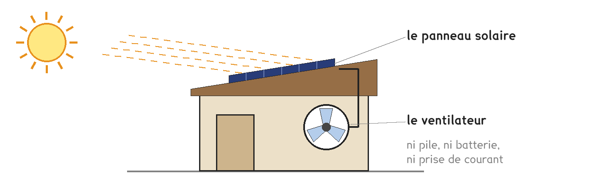
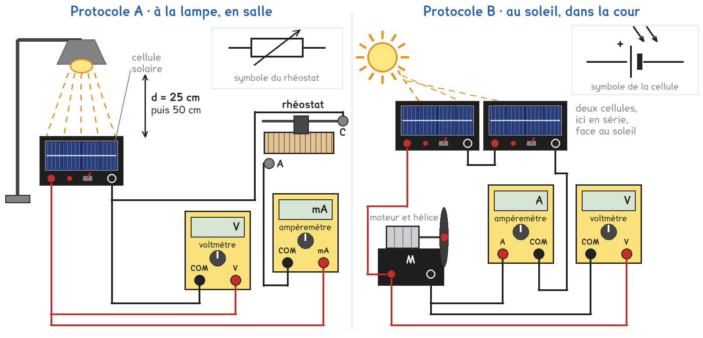
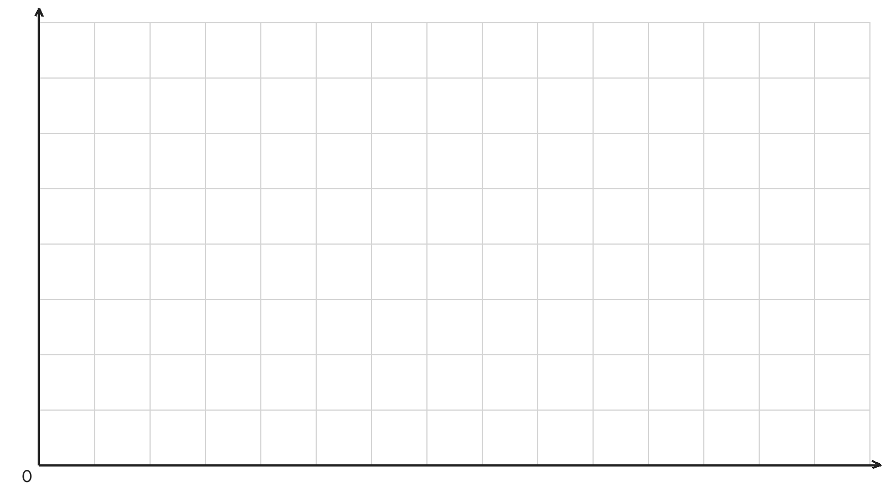

2de et 1re Bac Pro · toutes spécialités · TP commun 2DE-09
Comment placer et brancher un panneau solaire pour qu'il donne le plus de puissance au ventilateur ?
3 figures
Sujet. Dans un jardin partagé, l’abri à outils sent le renfermé. On a posé sur son toit un petit panneau solaire, branché directement sur un ventilateur : ni pile, ni batterie. Le matin, le ventilateur tourne à peine ; à midi, il souffle bien.

Problématique : comment placer et brancher un panneau solaire pour qu’il donne le plus de puissance au ventilateur ?
Au laboratoire, le panneau est remplacé par une cellule solaire dans son coffret, et le ventilateur par un petit moteur à hélice.
La notice du ventilateur donne, pour son panneau en plein soleil :
| Cellules au silicium | Tension à vide | Courant de court-circuit | Puissance au mieux |
|---|---|---|---|
| 12, en série | 7,2 V | 0,52 A | 2,8 W |
Le moteur fonctionne de 3 à 6 V. Conseil de pose : « face au soleil de midi, sans aucune ombre ».
a) Le panneau est un photodétecteur : il reçoit une grandeur et en donne deux autres. Compléter avec : éclairement, tension, intensité ; lux, volt, ampère.
| La grandeur | Son unité | |
|---|---|---|
| Ce qu’il reçoit, la grandeur d’entrée | …………………………… | ………………… |
| Ce qu’il donne, une grandeur de sortie | …………………………… | ………………… |
| Ce qu’il donne, l’autre grandeur de sortie | …………………………… | ………………… |
Les douze cellules du panneau sont identiques.
b) En série, les tensions des cellules s’ajoutent. Calculer la tension à vide d’une seule cellule du panneau.
U = ……………… ÷ ……………… = ……………… V
c) Convertir. Le premier est fait en exemple. Puis un jour de soleil, le moteur reçoit U = 5,5 V et I = 0,45 A : calculer la puissance qu’il reçoit, P = U × I.
| 0,52 A | 0,45 A | 64 mA | 350 mW |
|---|---|---|---|
| 520 mA | ………… mA | ………… A | ………… W |
P = ……………… × ……………… = ……………… W. Est-ce la puissance au mieux du panneau ? oui · non
Deux protocoles répondent à la même question. Une partie de la classe prend A, l’autre prend B, et on compare à la fin.

Protocole A · à la lampe, en salle. On fait varier la résistance du rhéostat branché sur une cellule, de zéro à très grande, et on relève U et I : c’est la caractéristique de la cellule.
Protocole B · au soleil, dans la cour. On change l’orientation de deux cellules, puis leur branchement sur le moteur, et on relève U et I aux bornes du moteur.
d) Comparer les deux protocoles. Dans la dernière ligne, entourer.
| Protocole A | Protocole B | |
|---|---|---|
| Ce qu’on fait varier | …………………………… | …………………………… |
| Ce qui reçoit l’énergie de la cellule | …………………………… | …………………………… |
| La lumière | lampe · soleil | lampe · soleil |
Le choix se fait maintenant, avant de toucher au matériel.
e) Quel protocole prenez-vous ? Justifier en une phrase. Le professeur peut vous imposer celui qui reste disponible.
Je prends le protocole ……… parce que ……………………………………………………………………
Les deux protocoles mesurent d’abord la cellule seule, sous deux éclairements : sa tension à vide au voltmètre seul, son courant de court-circuit à l’ampèremètre seul.
f) Avant de mesurer, faire une hypothèse. Quand l’éclairement de la cellule diminue, entourer :
Sa tension à vide : diminue beaucoup · diminue un peu · ne change pas
Son courant de court-circuit : diminue beaucoup · diminue un peu · ne change pas
Avant de commencer
Ne jamais regarder le soleil, ni en face, ni dans un reflet : on oriente la cellule avec l’ombre d’un crayon. L’ampoule et l’abat-jour brûlent : on ne déplace la lampe qu’éteinte, par son pied. Doigts et cheveux loin de l’hélice.
L’ampèremètre seul sur les bornes, pour le courant de court-circuit : sur une cellule solaire seulement. Sur un générateur, le fusible saute. Borne et calibre 10 A d’abord.
g) Avant de câbler, schématiser votre montage avec les symboles normalisés. En B, celui des deux cellules en série.
Le schéma se dessine sur la feuille du TP.
h) Relever les mesures de la cellule seule, dans la ligne de votre protocole. Sur le calibre 10 A, un affichage de 0,22 A s’écrit 220 mA.
| La cellule seule | E (lx) | U à vide (V) | I de court-circuit (mA) |
|---|---|---|---|
| A : à 25 cm · B : à plat | |||
| A : à 50 cm · B : face au soleil |
Avec U en volts et I en milliampères, P = U × I sort en milliwatts.
i) Relever les mesures de votre protocole et calculer P. Protocole A, lampe à 25 cm :
| A · point | 1 | 2 | 3 | 4 | 5 | 6 | 7 | 8 |
|---|---|---|---|---|---|---|---|---|
| U (V) | ……… | ……… | ……… | ……… | ……… | ……… | ……… | ……… |
| I (mA) | ……… | ……… | ……… | ……… | ……… | ……… | ……… | 0 |
| P (mW) | ……… | ……… | ……… | ……… | ……… | ……… | ……… | 0 |
Pour le graphique j, carreaux de 1 cm. A, la caractéristique I = ƒ(U) : U en abscisse, 1 cm pour 0,2 V ; I en ordonnée, 1 cm pour 10 mA, ou 20 mA au-delà de 80 mA. Relier à main levée, entourer le point où P est la plus grande.
B : un bâton de hauteur P par branchement, 1 cm pour 50 mW, ou 100 mW au-delà de 400 mW.
Protocole B seulement, cellules face au soleil :
| Branchement | U (V) | I (mA) | P (mW) | L’hélice, entourer |
|---|---|---|---|---|
| Une seule cellule | ………… | ………… | ………… | arrêt · lente · rapide |
| Deux en série | ………… | ………… | ………… | arrêt · lente · rapide |
| Deux en parallèle | ………… | ………… | ………… | arrêt · lente · rapide |
| En série, une demi-cellule à l’ombre | ………… | ………… | ………… | arrêt · lente · rapide |
j) Tracer le graphique de votre protocole.

k) Protocole A : la caractéristique est-elle une droite qui passe par l’origine, comme celle d’un conducteur ohmique ? Sous quelle tension la cellule donne-t-elle le plus de puissance ? Comparer à U à vide. Protocole B : quel branchement fait tourner l’hélice le plus vite ? Est-ce celui où P est la plus grande ?
l) Votre hypothèse de la question f est-elle confirmée ? Comparer votre tableau h avec celui d’un groupe qui a pris l’autre protocole : qui a eu le plus de lumière ? Sa tension à vide et son courant de court-circuit ont-ils changé comme les vôtres ?
m) Répondre à la problématique en deux phrases, pour les jardiniers : où placer le panneau, et comment brancher ses cellules ?
Ce que ce TP a établi, et qui vaut pour tout panneau solaire :
À RETENIR
Une cellule solaire, ou photopile, est un photodétecteur. Quand l’éclairement augmente, son courant de court-circuit augmente à peu près dans la même proportion et sa tension à vide change peu : d’où le panneau face au soleil, sans ombre.
Sa caractéristique I = ƒ(U) n’est pas une droite : la puissance P = U × I est la plus grande dans le coude de la courbe, vers les trois quarts de la tension à vide.
En série, les tensions des cellules s’ajoutent ; en parallèle, ce sont les intensités.
D’après votre tableau h et la question b, combien de cellules de 0,6 V le coffret du labo contient-il, en série ? ……………… Un jour d’été, le ventilateur reçoit en moyenne 2,4 W pendant 7 h : E = P × t = ……………………… Wh. Le panneau rejette-t-il du CO₂ pour produire cette énergie ? Et pour être fabriqué ?
TP commun de physique-chimie, toutes spécialités. Le travail se fait sur la feuille du TP : cette page en est la version à l'écran, sans les lignes à remplir. Rien n'est enregistré.